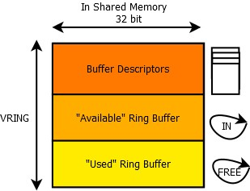
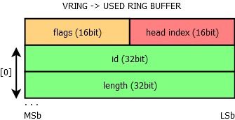
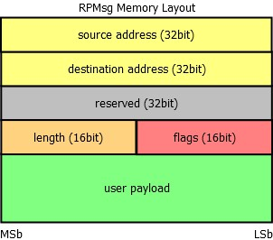
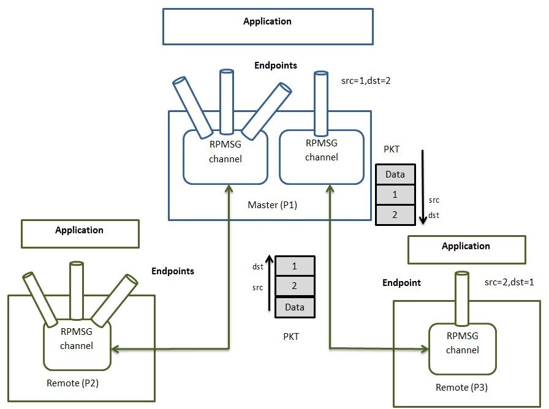

RPMsg Messaging Protocol
In asymmetric multiprocessor systems, the most common way for different cores to cooperate is to use a shared memory-based communication. There are many custom implementations, which means that the considered systems cannot be directly interconnected. Therefore, this document’s aim is to offer a standardization of this communication based on existing components (RPMsg, VirtIO).
Protocol Layers
The whole communication implementation can be separated in three different ISO/OSI layers - Transport, Media Access Control and Physical layer. Each of them can be implemented separately and for example multiple implementations of the Transport Layer can share the same implementation of the MAC Layer (VirtIO) and the Physical Layer. Each layer is described in following sections.

Physical Layer – Shared Memory
The solution proposed in this document requires only two basic hardware components - shared memory (accessible by both communicating sides) and inter-core interrupts (in a specific configuration optional). The minimum configuration requires one interrupt line per communicating core meaning two interrupts in total. This configuration is briefly presented in figure at the beginning of this section. It is to be noticed that no inter-core synchronization hardware element such as inter-core semaphore, inter-core queue or inter-core mutex is needed! This is thanks to the nature of the virtqueue, which uses single-writer-single-reader circular buffering. (As defined in next subsection)
In case the “used” and “avail” ring buffers have a bit set in their configuration flags field, the generation of interrupts can be completely suppressed - in such a configuration, the interrupts are not necessary. However both cores need to poll the “ring” and “used” ring buffers for new incoming messages, which may not be optimal.

Media Access Layer - VirtIO
This layer is the key part of the whole solution - thanks to this layer, there is no need for inter-core synchronization. This is achieved by a technique called single-writer single-reader circular buffering, which is a data structure enabling multiple asynchronous contexts to interchange data.
This technique is however applicable only in core-to-core configuration, not in core-to-multicore configuration, since in such a case, there would be multiple writers to the “IN” ring buffer. This would require a synchronization element, [such as a semaphore?], which is not desirable.
The above shown picture describes the vring component. Vring is composed of three elementary parts - buffer descriptor pool, the “available” ring buffer (or input ring buffer) and the “used” ring buffer (or free ring buffer). All three elements are physically stored in the shared memory.
Each buffer descriptor contains a 64-bit buffer address, which holds an address to a buffer stored in the shared memory (as seen physically by the “receiver” or host of this vring), its length as a 32-bit variable, 16-bit flags field and 16-bit link to the next buffer descriptor. The link is used to chain unused buffer descriptors and to chain descriptors, which have the F_NEXT bit set in the flags field to the next descriptor in the chain.

The input ring buffer contains its own flags field, where only the 0th bit is used - if it is set, the “writer” side should not be notified, when the “reader” side consumes a buffer from the input or “avail” ring buffer. By default the bit is not set, so after the reader consumes a buffer, the writer should be notified by triggering an interrupt. The next field of the input ring buffer is the index of the head, which is updated by the writer, after a buffer index containing a new message is written in the ring[x] field.

The last part of the vring is the “used” ring buffer. It contains also a flags field and only the 0th bit is used - if set, the writer side will not be notified when the reader updates the head index of this free ring buffer. The following picture shows the ring buffer structure. The used ring buffer differs from the avail ring buffer. For each entry, the length of the buffer is stored as well.
Both “used” and “avail” ring buffers have a flags field. Its purpose is mainly to tell the writer whether he should interrupt the other core when updating the head of the ring. The same bit is used for this purpose in both “used” and “avail” ring buffers:

Transport Layer - RPMsg
RPMsg Header Definition
Each RPMsg message is contained in a buffer, which is present in the shared memory. This buffer is pointed to by the address field of a buffer descriptor from vring’s buffer descriptor pool. The first 16 bytes of this buffer are used internally by the transport layer (RPMsg layer). The first word (32bits) is used as an address of the sender or source endpoint, next word is the address of the receiver or destination endpoint. There is a reserved field for alignment reasons (RPMsg header is thus 16 bytes aligned). Last two fields of the header are the length of the payload (16bit) and a 16-bit flags field. The reserved field is not used to transmit data between cores and can be used internally in the RPMsg implementation. The user payload follows the RPMsg header.
Special consideration should be taken if an alignment greater than 16 bytes is required; however, this is not typical for a shared memory, which should be fast and is therefore often not cached (alignment greater than 8 bytes is not needed at all).
Flags Field
The flags field of the RPMsg header is currently unused by RPMsg and is reserved. Any propositions for what this field could be used for is welcome. It could be released for application use, but this can be considered as inconsistent - RPMsg header would not be aligned and the reserved field would be therefore useless.

RPMsg Channel
Every remote core in RPMsg component is represented by RPMsg device that provides a communication channel between master and remote, hence RPMsg devices are also known as channels RPMsg channel is identified by the textual name and local (source) and destination address. The RPMsg framework keeps track of channels using their names.
RPMsg Endpoint
RPMsg endpoints provide logical connections on top of RPMsg channel. It allows the user to bind multiple rx callbacks on the same channel.
Every RPMsg endpoint has a unique src address and associated call back function. When an application creates an endpoint with the local address, all the further inbound messages with the destination address equal to local address of endpoint are routed to that callback function. Every channel has a default endpoint which enables applications to communicate without even creating new endpoints.
RPMsg Protocol Limitations
The RPMSG document has the concept of the static channel but it is not implemented in upstream Linux and OpenAMP. Please see https://www.kernel.org/doc/Documentation/rpmsg.txt. The protocol must define connection sequence when channel is created statically. No synchronization point is defined by the RPMsg after which both sides can communicate reliably with each other. In the current protocol, at startup, the master sends notification to remote to let it know that it can receive name service announcement. However, master does not consider the fact that if the remote is ready to handle notification at this point in time.